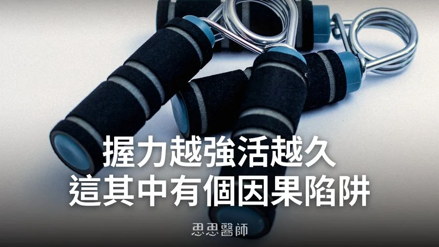

握力越強活越久？這其中有個因果陷阱

不少健康科普內容都會提到一個數字：握力每少5公斤，死亡風險就跟著往上爬一截，這幾乎已經變成「老化指標界」的共識，連世界衛生組織的健康評估量表都把握力納進去。我自己在門診也常建議病人買一個握力器測一下，當作簡單的健康篩檢。但每次講到這個，我心裡都會冒出一個問題：握力強的人比較不會死，到底是因為握力本身在保護身體，還是因為本來身體好的人握力就比較強？如果是後者，那叫你每天捏握力器、把握力練上去，對延長壽命其實沒有幫助，只是在處理一個「結果」，而不是「原因」。這個問題背後，藏著流行病學裡最麻煩的一個陷阱：相關不等於因果。
先說握力和死亡率的關聯有多紮實。一篇涵蓋28個國家、追蹤多年的世代研究發現，握力排在後三分之一的老年人，死亡風險比排在前三分之一的人明顯高出許多，男性的死亡風險是後者的2.4倍（HR 0.41），女性則是2.6倍（HR 0.38），這個關聯在調整年齡、性別、BMI、慢性病這些變項之後依然存在。數字夠大、研究夠多、重複驗證的次數也夠，握力和死亡率之間的關聯，幾乎是流行病學裡最穩的發現之一。
但「關聯穩」不代表「因果穩」。握力低的人通常同時有好幾件事在發生：肌肉量少、慢性發炎指數偏高、營養狀況差、本身可能有還沒被診斷出來的慢性病。更麻煩的是反向因果（Reverse Causation）：好幾篇追蹤型研究發現，巴金森氏症、失智症患者的握力，早在確診前好幾年就已經開始走下坡，代表握力下降有可能是疾病的「前兆」，而不是握力不好去造成疾病。換句話說，握力低的人死亡風險高，很可能是因為他們本來就已經走在生病的路上，握力只是反映出這個狀態，而不是握力本身去推了一把。
要把關聯和因果分開，流行病學界有一個專門的工具，叫做孟德爾隨機化（Mendelian Randomization, MR）。簡單說，這個方法是利用天生就決定一個人握力高低的基因變異，當作一個「隨機分配」的替身，因為基因在出生那一刻就定了、不會因為現在生病而反過來改變，所以用基因當工具去看握力和死亡率的關係，可以大幅排除反向因果和多數干擾因素的影響，比傳統的世代研究更接近回答「這到底是不是握力本身造成的」。
一篇2017年發表於《Nature Communications》、用英國Biobank和EPIC-Norfolk兩個大型世代資料做的孟德爾隨機化研究，結果相當意外：基因預測的握力，和全死因死亡率之間看不出因果關係，和冠心病、心肌梗塞的關聯也同樣不顯著。也就是說，這篇研究認為，握力和死亡率的那個穩定關聯，很可能主要來自干擾因素和反向因果，不是握力本身在保護你。唯一被證實有因果關係的結果，是骨折風險，握力比較高的人骨折風險確實比較低，這個倒是合理，因為握力和骨密度、肌肉對骨骼的機械刺激本來就有直接的生理連結。
不過這個議題還沒有被蓋棺論定。一篇2025年發表於《International Journal of Obesity》的孟德爾隨機化研究換了一個角度，把四肢骨骼肌量（Appendicular Lean Mass）和握力一起放進模型裡看，結果發現在男性身上，四肢骨骼肌量和握力都和壽命呈現正向的因果關係，但在女性身上沒有看到一樣的結果。這代表握力和壽命之間的因果關係可能真的存在，只是握力本身的力氣大小不一定是重點，更可能是握力所代表的「整體骨骼肌量」在起作用，而且這個效應可能還有性別差異，目前的證據並不算一致。
這也呼應了另一個角度的證據：握力不只是「手部力量」這麼單純的東西。有研究發現，就算把肌肉量這個變項統計調整掉，握力和健康結果之間的關聯依然存在，代表握力反映的不只是肌肉的「量」，還包括神經肌肉的協調效率和全身的發炎狀態，這個現象在醫學上有個名詞叫肌少力症（Dynapenia），意思是力量的流失比肌肉量的流失還要快，背後和慢性發炎、神經傳導效率下降都有關。骨骼肌本身也不只是用來出力氣的組織，它會分泌一整套叫做肌肉激素（Myokines）的訊號分子，和大腦、肝臟、胰臟溝通、調節代謝，這也是為什麼越來越多學者主張，真正該被重視的是全身骨骼肌的質和量，握力只是這整套系統露出來的其中一個指標。
那回到最初的問題：只練握力，死亡風險會跟著下降嗎？目前沒有研究直接證實「把握力練上去」這個動作本身能降低死亡率，握力相關的文獻幾乎都是觀察型研究或孟德爾隨機化分析，拿握力器當介入手段去直接驗證死亡率變化的臨床試驗沒有查到。比較合理的推論是，握力之所以能預測死亡風險，是因為它是全身骨骼肌量、神經肌肉功能和發炎狀態的一面鏡子，單獨訓練握力，只會讓這面鏡子裡的某一小塊變亮，不會讓整體狀況改善。真正有實證支持、能提升全身骨骼肌量與力量的方式，是規律的全身阻力訓練，握力提升通常只是這個過程中順便發生的結果，不該是你單獨去追的目標。
握力確實是一個很好用的篩檢工具，簡單、便宜，幾秒鐘就能量出來，但它比較像是體溫計，不是退燒藥。量到握力偏低，代表你該認真看一下全身的肌肉量和整體健康狀態，而不是去買一個握力器天天捏。與其問「我要怎麼讓握力變強」，不如問「我的全身肌肉夠不夠、夠不夠常在動」，後者才是握力這個數字背後，真正值得你花時間解決的問題。
參考資料
2. Causal effects of body composition on lifespan: Mendelian randomization analysis（Int J Obes, 2025）
（本文由我規劃架構與觀點，並協同 AI 校正與潤飾語句）
 空腹小雞跟思思醫師一起斷食，順便養一隻小雞來養小雞 →
空腹小雞跟思思醫師一起斷食，順便養一隻小雞來養小雞 →
好朋友早餐信
一週一封：《健康駭客週報》這集的研究重點，加上家醫專欄這週的新文章。免費，隨時可以退訂。